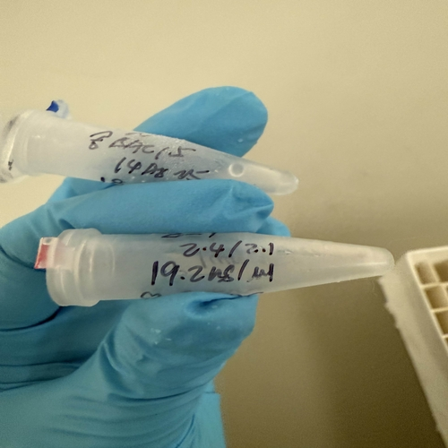
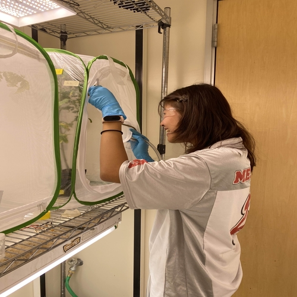
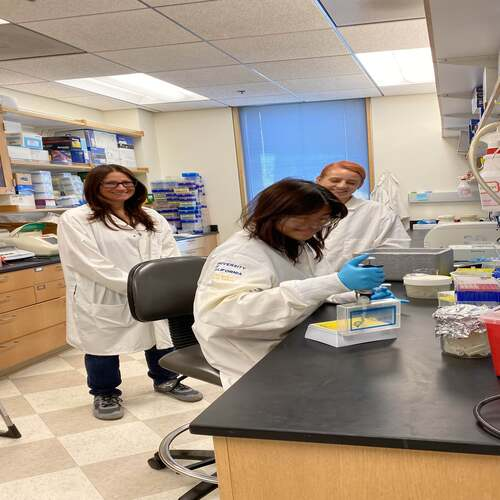
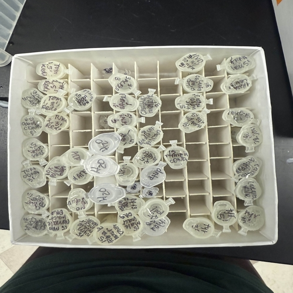

Amy Nguyen is an aspiring Clinical lab scientist and research professional currently pursuing her Bachelor of Science in Microbiology at the University of California, Riverside. With a deep-rooted passion for molecular analysis and environmental safety, Amy has cultivated a versatile technical skill set that bridges the gap between academic theory and practical, high-stakes laboratory application. Her professional journey is defined by a commitment to organizational excellence, meticulous data integrity, and a proactive approach to supporting scientific innovation.
Amy’s foundational expertise was significantly shaped through the prestigious RISE Program, where she operated under the mentorship of senior PhD researchers. During this intensive tenure, she mastered complex molecular biology workflows, including the synthesis of rRNAs and cDNAs from fresh biological samples. Her technical repertoire expanded to include the development of master mixes, primers, and buffers, as well as the preparation of gel electrophoresis from scratch. Beyond the bench, Amy demonstrated a keen analytical eye by scanning and evaluating electrophoresis results and translating her findings into professional research papers reviewed by faculty. This experience not only sharpened her proficiency in in vitro bacterial cloning and aphid dissection via microscopy but also solidified her ability to thrive in collaborative, fast-paced research environments.
In addition to her molecular work, Amy has a proven track record in comprehensive Laboratory Maintenance. Recognizing that groundbreaking research relies on a flawlessly managed environment, she has dedicated herself to ensuring that laboratory operations run with maximum efficiency. Her experience includes the sterilization and preparation of equipment and dishware, the careful handling and transport of experimental samples, and the monitoring of greenhouse environments to ensure optimal growth and pest control. This "ground-up" understanding of laboratory ecosystems makes her a reliable and detail-oriented contributor capable of managing both the technical and operational demands of a modern R&D facility.
Amy’s academic background is equally rigorous, featuring advanced coursework in Biochemistry, Genetics, and Organic Chemistry. Her curriculum has provided her with extensive hands-on experience in complex chemical synthesis, molecular weight calculations, and theoretical yield analysis. She is particularly adept at maintaining strict safety protocols and organized bench spaces, a discipline reinforced by her status as an AHA-certified BLS provider. This certification reflects her broader commitment to situational awareness and safety, ensuring that she is prepared to maintain a secure and professional environment for her team.
As a local resident of Garden Grove, Amy is deeply invested in applying her skills to benefit the Southern California community. She is currently seeking opportunities to transition her expertise in microbial water quality monitoring and advanced oxidation processes into a professional R&D setting. Amy’s unique blend of molecular precision, operational discipline, and academic excellence positions her as a standout emerging professional in the field of microbiology, dedicated to advancing the future of environmental health and scientific research.
• Supported lab members by ensuring that lab equipment and dishware was available to use
• Prepared and planted experimental samples with careful handling to ensure proper growth according to research schedule
• Handled and transported 20+ lbs of soil content
• Surveyed the patients regarding health/customer service and feedback for improvements
• Informed patients of their pap smear test results via phone call
• Organized/printed paperwork regarding patient information to sort and clear storage
• Familiarized new UBW students with the program so they may become accustomed to the schedules, events, and people
• Scheduled meetings with mentees to check on their educational progress along with any updates within their life
• Initiated conversation/activities so that they may adjust and be comfortable with their new environment
• Engaged in monthly meetings with other mentors regarding upcoming mentor & mentee events



